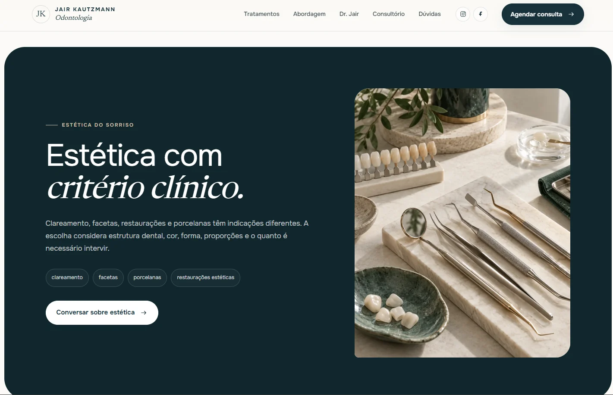
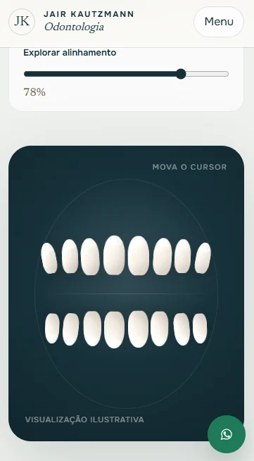

Áreas de atuação
Implantes, ortodontia, estética, prevenção ou outros serviços organizados de acordo com a prática real do profissional.
SITE PARA DENTISTAS
Uma presença digital própria para organizar tratamentos, apresentação profissional, localização, dúvidas e caminhos de contato em uma experiência clara no celular e no desktop.
ODONTOLOGIA
Um site pode organizar áreas de atuação, apresentar o profissional ou clínica, responder dúvidas e levar quem já demonstrou interesse para o contato.


ESTRUTURA
A página deve ser montada conforme os serviços realmente oferecidos, materiais disponíveis e regras de publicidade profissional vigentes.
Implantes, ortodontia, estética, prevenção ou outros serviços organizados de acordo com a prática real do profissional.
Formação, equipe, estrutura e informações relevantes para ajudar o paciente a entender quem está por trás do atendimento.
Endereço, mapa, horários, canais de contato e orientações que reduzam atrito antes do agendamento.
Experiência pensada para celular, com chamadas para ação claras e sem depender de hover.
Serviços, cidade, metadados e conteúdo estruturado para facilitar compreensão e indexação.
Conteúdo de profissão regulamentada precisa ser validado segundo as regras oficiais aplicáveis.
PRÓXIMO PASSO
Me envie o contexto do negócio, o que precisa melhorar e, se houver, o site ou Instagram atual. A conversa começa pelo problema, não por um pacote fechado.